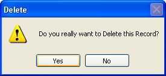

Delete a Record from a Database
Part of an ongoing tutorial. This lessons is part of an ongoing tutorial. The first part is here:
Coding your own VB .NET database projects
In the last part, you saw how to Add a new record to the database using VB .NET code. In this final part, you'll learn how to delete records.
Deleting Records from a Database
The code to delete a record is a little easier than last time. Double click your btnDelete and add the following:
Dim cb As New OleDb.OleDbCommandBuilder(da)
ds.Tables("AddressBook").Rows(inc).Delete()
MaxRows = MaxRows - 1
inc = 0
da.Update(ds, "AddressBook")
NavigateRecords()
You've met most of it before. First we set up a Command Builder. Then we have
this line:
ds.Tables("AddressBook").Rows(inc).Delete()
Just as there is an Add method of the DataSet Rows property, so there is a Delete method. You don't need anything between the round brackets, this time. We've specified the Row to delete with:
Rows( inc )
The inc variable is setting which particular Row we're on. When the Delete method is called, it is this row that will be deleted.
However, it will only be deleted from the DataSet. To delete the row from the underlying database, we have this again:
da.Update(ds, "AddressBook")
The Command Builder, in conjunction with the Data Adapter, will take care of the deleting. All you need to is call the Update method of the Data Adapter.
The MaxRows line in the code just deducts 1 from the variable. This just ensures that the number of rows in the DataSet matches the number we have in the MaxRows variable.
We also reset the inc variable to zero, and call the NavigateRecords() subroutine. This will mean that the first record is displayed, after a record has been deleted.
Try out your programme. Click the Next Record button a few times to move to a valid record. Then click the Delete Record button. The record will be deleted from the DataSet AND the database. The record that is then displayed will be the first one.
There's another problem, though: if you click the Delete Record button before the Next Record button, you'll get an error message. You can add an If Statement to check that the inc variable does not equal minus 1.
Another thing you can do is to display a message box asking users if they really want to delete this record. Here's one in action:

To get this in your own programme, add the following code to the very top of your Delete button code:
If MessageBox.Show("Do you really want to Delete this Record?", "Delete", MessageBoxButtons.YesNo, MessageBoxIcon.Warning) = DialogResult.No Then
MsgBox("Operation Cancelled")
Exit Sub
End If
The first two lines of the code are really one line, spread out so as to fit on this page.
But we're using the new message box function:
MessageBox.Show()
In between the round brackets, we specifying the message to display, followed by a caption for the message box. We then have this:
MessageBoxButtons.YesNo
You won't have to type all that out; you'll be able to select it from a popup list. But what it does is give you Yes and No buttons on your message box.
After typing a comma, we selected the MessageBoxIcon.Warning icon from the popup list.
But you need to check which button the user clicked. This is done with this:
= DialogResult.No
Again, you select from a popup list. We want to check if the user clicked the No button. This will mean a change of mind from the user. A value of No will then be returned, which is what we're checking for in the If Statement.
The code for the If Statement itself is this:
MsgBox("Operation Cancelled")
Exit Sub
This will display another message for the user. But most importantly, the subroutine will be exited: we don't want the rest of the Delete code to be executed, if the user clicked the No button.
And that's it for our introduction to database programming. You not only saw how to construct a database programme using the Wizard, but how to write code to do this yourself. There is an awful lot more to database programming, and we've just scratched the surface. But in a beginner's course, that's all we have time for.
The section that follows is all about Forms.